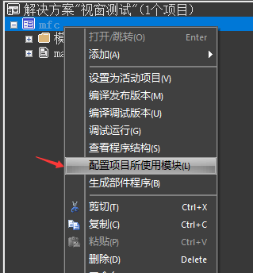
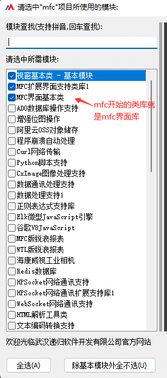
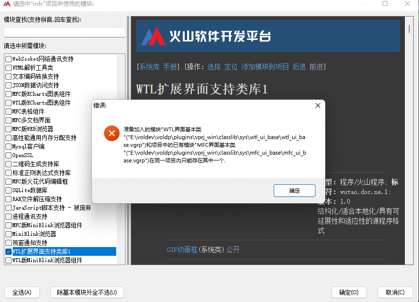

[下一章]
作者：创世魂
在Windows软件中，常会看到各式各样的软件界面效果，组成这些软件效果的元素就被称为组件，常见的有按钮、编辑框、选择框、列表框等。除此之外还有一个特殊的组件叫窗口，可以理解为整个程序的根组件，除窗口外其它的所有组件都需要在窗口上才可以显示出来，因此组件又被称为窗口组件。
窗口组件大致可以分为以下几个类型：
容器类组件：譬如窗口、分组框、选择夹等可以存放其它组件的组件；
控制类组件：譬如按钮、选择框、单选框等需要进行操作的组件；
展示类组件：譬如标签、编辑框、图片框等主要以展示为目的的组件。
除以上三个分类外，组件整体上还可以分为两个大类型：“可视组件”和“不可视组件”，譬如：时钟就属于不可视组件，它必须依赖窗口才可以正常使用，但是软件运行时又看不到此组件。
界面库是某种类型组件的集合被称为界面库，市面上的界面库有很多比较知名的有MFC、QT、win32界面库。火山视窗官方库目前封装了MFC和WTL两个界面库，其中MFC界面库体积较大，同样空窗口程序编译，使用MFC大约4mb左右，WTL仅有几百KB大小，在开发过程中可根据实际需求选择合适的界面库即可。
在火山中选择界面库，其实就是一个配置模块的过程，如下所示：
右键项目，选择配置项目所使用模块。

在模块配置窗口中，选择需要配置的界面库即可，如下图中，以“MFC”字符开始的类库就是MFC界面库。

在火山视窗中界面库不支持混用，譬如：已经配置了mfc界面库想要同时配置wtl界面库就会提示“同一个项目内只能存在其中一个”。

本篇教程将以MFC界面库的视角来介绍其组件如何使用。
[下一章]